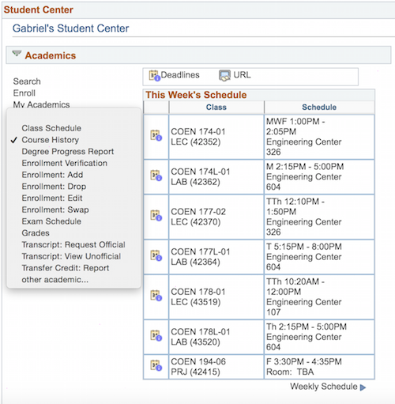
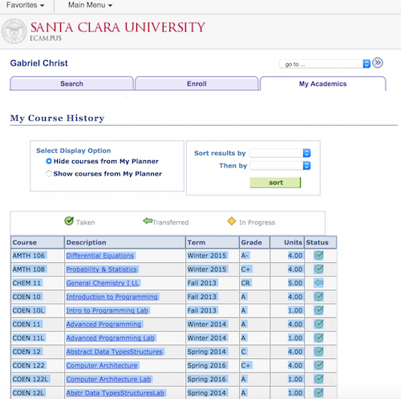

SCU Online Degree Progress Report
Welcome to the online degree progress report! Please follow the below steps to determine which courses and requirements you still need to fulfill.
- Login to SCU eCampus
- On the eCampus homepage in the Student Center section under Academics, select Course History:

- Copy all of your Course History:

- Paste your Course History into the box below: